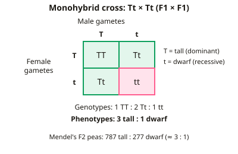

GCSE Biology · Topic 9
History of genetics, evolution and genomics
History of genetics, evolution and genomics tells the story of how scientists worked out the rules of inheritance and the code of life.
We will start with Mendel and his pea plants, follow the discovery of DNA, and see how new species form and old ones become extinct.
Finally we look at the Human Genome Project and the ethical questions raised by genetic testing and embryo screening.
- 4 subtopics
- 98 questions
- Free: 9.1 notes and 10 questions
In this topic
- 9.1Mendel, the discovery of genes and the development of genetic understandingFree below · 27 questions
- 9.2Speciation and extinctionOpen in Full Marks · 30 questions
- 9.3Human Genome Project, genetic testing and embryo screening: ethical issuesOpen in Full Marks · 21 questions
- 9.4Human evolution: fossils (Ardi, Lucy, Turkana Boy) and stone toolsOpen in Full Marks · 20 questions
9.1 · Free notes
Mendel, the discovery of genes and the development of genetic understanding

Key points
- Gregor Mendel, an Augustinian monk, bred pea plants in the 1850s–60s and published his results in 1866.
- Peas suited the work because they grow quickly, produce many seeds and have clear contrasting characteristics (e.g. tall/dwarf). They can also be cross-pollinated under control.
- Crossing pure-breeding tall with pure-breeding dwarf plants gave all tall offspring (F1). Crossing the F1 plants together gave about 3 tall : 1 dwarf in the F2 (e.g. 787 : 277).
- He concluded that characteristics are controlled by separate 'units' (factors), one from each parent, passed on in gametes. One form can be dominant and mask the recessive form; they do not blend.
- Mendel counted large numbers of offspring over several generations, so his ratios were reliable and unlikely to be due to chance.
- His ideas were not accepted at the time. Chromosomes, genes and meiosis were unknown, so there was no mechanism to explain his factors. He died in 1884 without recognition.
- In the late 1800s better microscopes let scientists see chromosomes during cell division. Mendel's work was rediscovered about 1900, and in the early 1900s it was proposed that genes are carried on chromosomes.
- In 1953 Watson and Crick built the double helix model of DNA, using X-ray diffraction images by Rosalind Franklin (and Maurice Wilkins). Genes were then understood as sections of DNA that code for proteins.
- Key terms: allele (a version of a gene), genotype (alleles present), phenotype (observable characteristic), homozygous (two identical alleles) and heterozygous (two different alleles).
- Tt × Tt gives 1 TT : 2 Tt : 1 tt, so 75% (3 : 1) show the dominant phenotype. Tt × tt gives 1 : 1. Expected number = probability × total offspring.
- A new scientific idea is accepted when it is supported by repeatable evidence, can be explained by a mechanism and has been checked by peer review.
In more detail
- Mendel's monohybrid cross: pure tall (TT) × pure dwarf (tt) → F1 all Tt (tall). F1 × F1 → F2 of 1 TT : 2 Tt : 1 tt, which is about 3 tall : 1 dwarf.
- Timeline: 1866 Mendel publishes; late 1800s chromosomes seen during cell division; early 1900s genes linked to chromosomes; 1953 DNA double helix; 2003 Human Genome Project completed.
- Rosalind Franklin produced the X-ray images of DNA (such as Photo 51) that showed it was a helix; Watson and Crick used these data to build their model.
- How science works: Mendel's work was ignored because no one could see his 'units' and he was not well known. It was accepted only when later evidence explained it.
Practice
Mendel, the discovery of genes and the development of genetic understanding: 10 questions
Pick an answer to check it, or open the answer for the explanation.
1. Why were pea plants a good choice for Mendel's breeding experiments?
- They have many contrasting traits, grow quickly and can be cross-pollinated by hand
- They reproduce only asexually, so all offspring are identical
- They have very few chromosomes, which he could count
- They produce one large offspring per plant each year
Show answer
A: They have many contrasting traits, grow quickly and can be cross-pollinated by hand. Peas grow fast, give many seeds, show clear contrasting traits and can be pollinated under control. Mendel knew nothing of chromosomes, and peas reproduce sexually.
2. Mendel crossed pure-breeding tall peas with pure-breeding dwarf peas. What did he observe in the first generation (F1)?
- All tall plants
- Three tall to one dwarf
- Medium-height plants
- Half tall and half dwarf
Show answer
A: All tall plants. The tall characteristic is dominant and masks the dwarf one, so all F1 plants were tall. Characteristics did not blend.
3. Two heterozygous tall pea plants (Tt) are crossed and produce 840 seeds that all grow. How many tall plants are expected?
- 840
- 210
- 420
- 630
Show answer
D: 630. Tt × Tt gives 3 tall : 1 dwarf, so 3/4 are tall. 840 × 0.75 = 630.
4. In his F2 generation Mendel counted 787 tall and 277 dwarf plants. Which ratio of tall : dwarf is closest to this?
- 1 : 1
- 3 : 1
- 2 : 1
- 4 : 1
Show answer
B: 3 : 1. 787 ÷ 277 ≈ 2.8, which is closest to 3 : 1. This is the ratio expected from Tt × Tt.
5. Why was Mendel's work largely ignored when it was published?
- Other scientists repeated it and could not get the same results
- He did not count his offspring, so he had no data
- He used animals, which were thought unreliable
- Chromosomes, genes and meiosis were not yet known, so his factors could not be explained
Show answer
D: Chromosomes, genes and meiosis were not yet known, so his factors could not be explained. Without knowledge of chromosomes, genes and meiosis there was no mechanism to explain his results. He did count offspring, and later work confirmed his findings.
6. Which sequence puts these discoveries in the correct order, earliest first?
- Mendel's peas, chromosomes seen, Watson and Crick's DNA model
- Watson and Crick's DNA model, Mendel's peas, chromosomes seen
- Mendel's peas, Watson and Crick's DNA model, chromosomes seen
- Chromosomes seen, Watson and Crick's DNA model, Mendel's peas
Show answer
A: Mendel's peas, chromosomes seen, Watson and Crick's DNA model. Mendel published in 1866. Chromosomes were seen in the late 1800s and Watson and Crick proposed the DNA structure in 1953.
7. Mendel published in 1866 and died in 1884. When was his work rediscovered and recognised?
- About 1900
- About 1953
- About 1930
- About 1870
Show answer
A: About 1900. Several scientists rediscovered his work around 1900, after chromosomes and cell division had been observed. This was after his death.
8. A heterozygous tall pea plant (Tt) is crossed with a dwarf plant (tt). Of 120 offspring, how many are expected to be dwarf?
- 90
- 60
- 40
- 30
Show answer
B: 60. Tt × tt gives 1 Tt : 1 tt, so half the offspring are dwarf. 120 ÷ 2 = 60.
9. Which evidence did Watson and Crick use to build their 1953 model of DNA?
- Mendel's counts of pea plants
- Electron micrographs of chromosomes in meiosis
- X-ray diffraction images taken by Rosalind Franklin
- The base sequence of the human genome
Show answer
C: X-ray diffraction images taken by Rosalind Franklin. Franklin's X-ray diffraction images suggested a helix. The human genome sequence was not available until 2003.
10. Why did Mendel count large numbers of offspring from each cross?
- To prove that genes are made of DNA
- To make the dominant allele more common
- To make sure the ratios were reliable and not due to chance
- To change the ratios into a 1 : 1 pattern
Show answer
C: To make sure the ratios were reliable and not due to chance. Small samples can give unrepresentative ratios by chance. Large numbers make the pattern (e.g. 3 : 1) reliable and repeatable.
Keep going in Full Marks
Full Marks has 27 questions on Mendel, the discovery of genes and the development of genetic understanding (17 more than here), set out in practice levels. You also get notes and 3D models for all 4 subtopics of History of genetics, evolution and genomics, plus games, timed exams and past papers.
On your exam board
- AQATopic 6: Inheritance, variation and evolution
- OCR ATopic B5: Genes, inheritance and selection, Topic B6: Global challenges
- OCR BTopic B1: You and your genes, Topic B6: Life on Earth – past, present and future
- EdexcelTopic 3: Genetics, Topic 4: Natural selection and genetic modification
- CambridgeTopic 17: Inheritance, Topic 18: Variation and selection